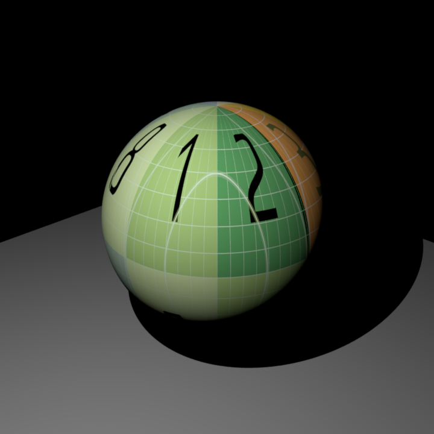
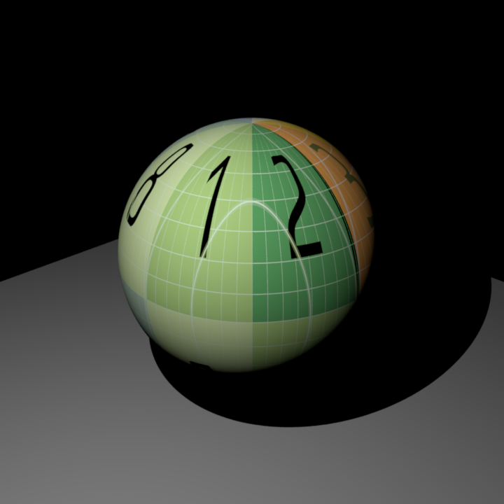

Depth of Field
Relevant code:
src/depth.cpp
Depth of field can be added to a scene by using the newly implemented camera DepthCamera. It offers all of the same features as the already
built PerspectiveCamera (width, height, fov, nearclip and farclip...) but additionally takes in two parameters
lensRadius and focalDistance that create the depth of field effect. This is accomplished in the sampleRay() method, where if the lensRadius is
greater than zero, the lens point and focus point are calculated, and the returned ray is modified with an updated origin of the lens point and
distance ending at the calculated focus point.
Example Usage:
<camera type="depth">
...
<float name="lensRadius" value="0.4" />
<float name="focalDistance" value="6" />
</camera>
All images in this section are shot with a DepthCamera in the base Cornell Box scene and can be found
in scenes/val/dof/*.xml. First, we can hold the lensRadius constant
and vary the focalDistance to see objects of varying depths come in and out of view.
{kind=link}
lensRadius = 0.4, focalDistance = 3.95
{kind=link}
lensRadius = 0.4, focalDistance = 4.97
{kind=link}
lensRadius = 0.4, focalDistance = 6.00
Additionally, we can hold the focalDistanceconstant and vary the lensRadius. Setting
lensRadius to 0.00 is just a perspective camera with infinite depth of field, but when increased, the range
of what is in focus in the image decreases.
{kind=link}
lensRadius = 0.01, focalDistance = 4.97
{kind=link}
lensRadius = 0.10, focalDistance = 4.97
{kind=link}
lensRadius = 0.50, focalDistance = 4.97
{kind=link}
lensRadius = 0.70, focalDistance = 4.97
Problems and External Libraries:
This feature was quite straight forward to implement with resources from PBR 6.4 on Realistic Cameras and Lecture 20 on Optics and Cameras. There are no external libraries required, and only a few new lines of code on top of the already implemented shell of the perspective camera.
Images as Textures
Relevant code:
src/imagetexture.cppsrc/sphere.cppsrc/lodepng.cppinclude/nori/lodepng.h
One of the most fundamental features for rendering realistic images is using
images as textures. With the new Texture class ImageTexture this
is now possible. You can simply include the Texture Type "image_texture"
with name "albedo" under a BSDF in the scene file and the texture will be added.
Example Usage:
<texture type="image_texture" name="albedo">
<string name="filename" value="image.png" />
<vector name="scale" value="1.0 1.0" />
<string name="wrap" value="repeat" />
</texture>
Implementation and Validation:
This is accomplished with a two-step process. First, on initialization,
the lodepng library will read the image texture and convert it
into a Color3f matrix. Next, whenever the BSDF is evaluated, it will make
a call to the ImageTexture's eval() function with the corresponding uv coordinates.
The ImageTexture will then consider the scale of the image, as well as the
wrap technique (clamp or repeat) to return the corresponding color.
All images in this section are shot with the same plane.obj, uv image texture, and camelhead.obj or analytical sphere.
The scenes also use a single point light. However, note that
Nori takes the parameter power for a point light while Mitsuba uses intensity, resulting in slightly
different colors and light intensity. This does not matter for the image-texture comparison, as we
are just validating the mapping from uv position to image texture. The Nori scenes can be found at
scenes/val/imagetextures/*.xml and the Mitsuba scenes at scenes/mitsuba/imagetexture/*.xml.
Sphere Comparison with Wrap = Repeat and Scale = (1,1)
Mesh Comparison with Wrap = Repeat and Scale = (1,1)
Mesh Comparison with Wrap = Clamp and Scale = (1,1)
 

Sphere Comparison with Wrap = Repeat and Scale = (1,2)
Sphere Comparison with Wrap = Repeat and Scale = (0.5,0.5)
Problems and External Libraries:
Suprisingly, the implementation of this feature gave me a lot more trouble than I was expecting.
After figuring out the the lodepng external library and successfully converting
.pngs to a Color3f array, I was quickly able to implement correct mapping for meshes.
However, when converting to Mitsuba, there was a flipped coordinate frame so it took me a while
to initialize a scene that was the same, and then figure out a way to flip the uv mapping. Additionally,
my sphere::setHitInformation() was setting the uv coordinates incorrectly, leading
to the image wrapping around the wrong pole of the sphere. After lots of debugging and trying different
formulas, I modified sphericalCoordinates(), flipped the u and v, and rescaled to produce
the correct result. This finally confirmed the uv mapping was correct for both the sphere and meshes
as well as scaling and clamping, but took up an unnecessary amount of time.
Bump Mapping
Relevant code:
src/mesh.cpp::setHitInformationsrc/diffuse.cpp::useBumpMap (and others)include/nori/bsdf.h::useBumpMap
To enhance surface detail without the cost of adding highly detailed geometry,
I implemented support for bump mapping to manipulate shading normals.
There is no new Texture class for the implementation as the process is almost identical
to the image textures. In order to use a bump map, all that needs to be done
is including the Texture Type "image_texture"
with name "bumpmap" under a BSDF in the scene .xml file.
Example Usage:
<texture type="image_texture" name="bumpmap">
<string name="filename" value="bumpmap.png" />
<vector name="scale" value="1.0 1.0" />
<string name="wrap" value="repeat" />
</texture>
Implementation and Validation:
In order to enable Bump Mapping for BSDFs,
a new member m_bumpmap needs to be added to the class similar to its albedo m_albedo,
as well as a useBumpMap() function
that will return the bump map if it exists. Note that for this example a diffuse BSDF
has been updated with this implementation, but for other examples this function will also be
implemented in the corresponding BSDF .cpp file. Then, when intersections
are being calculated and setHitInformation() is called inside of mesh.cpp,
the current BSDF is checked for a bump map. If it has one, it will evaluate
the bump map at the intersection point, and calculate the new shading normal using:
its.shFrame.
Comparison of Only Image (Top Left), Only the Bump Mapping (Top Right) and Bump Mapping Applied to Texture (Bottom)
Problems and External Libraries:
After figuring out my issues with the Image Textures, the implementation of Bump Mapping went smoothly. PBR 9.3 has a notable section on bump mapping as well as a full calculation of the new shading normal, and Mitsuba also has its own implementation available. Additionally, there is well described article on Wikipedia that explains the calculation of the tangent space as well as the mapping from the bump map to the new shading normal